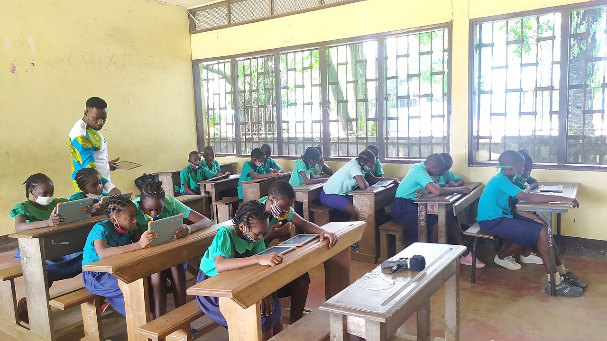

Safeguarding and privacy
How we protect children, and the information everyone shares with us.
Plain-language summary, version 2, last updated 2 October 2026. Please read it together with the terms of use.
Children come first
- We do not ask orphanages for children's personal files, and the platform has no place to upload them. We only record how many children a home cares for.
- Orphanages must not publish children's full names, identity documents, medical details or other sensitive information in their story, needs or photos.
- Only photos chosen by the orphanage are shown, and only on profiles our team has verified.
- If you think a child is at risk, or a profile shows something that should not be public, tell us at once through the contact page. The team can remove content and pause accounts. If a child is in immediate danger, contact the local authorities or emergency services first.
Photos, videos and stories
- Orphanages choose what to share: stories, news, thank-yous for gifts, photos and short videos. Only approved donors and verified partners can see them, and a video can only be played through a short-lived private link, so it cannot be found or shared as a public address.
- Homes must have permission before showing a child's face or voice, and must never post a child's full name, address, school, identity documents or medical details. Supporters must not copy or republish photos and videos of children.
- The team can see everything a home posts, can watch its videos, and removes anything unsafe. If you see something that should not be there, tell us through the contact page.
- A home may also list links to its own social pages. Those pages are run by the home, not by us, and have their own rules.
Visits
- Only approved donors and verified partners can ask to visit a home, and the home decides. The team can see every request.
- Visits should always be supervised by the home's staff. Visitors are never left alone with children, and photos of children need the home's agreement.
- A visitor's email address is shared with the home only after the home approves the visit.
Who can see what
- Orphanage profiles are visible only to approved donors and verified partners. A home's phone number and email are not shown to them: they contact the home through messages and visit requests on the site. A donor who pledges to a home sees its payment account, so they can send the gift, but only once our team has confirmed the account belongs to the home. A home the team is reviewing is hidden from them until the review is finished.
- Verification documents are private. Only the person who uploaded them and the CAM Orphanage Connect team can open them.
- Donor names are shown to a home unless the donor chooses to hide them when pledging. Homes can only start a conversation with donors who gave under their own name.
- Messages are visible to the people in the conversation and to the team, who read direct chats to keep everyone safe.
What information we keep
- Your name, email address (and when you confirmed it with the link we sent you) and a securely scrambled (hashed) password. We never see or store your real password.
- The profile details and documents you choose to provide.
- Your pledges, visit requests and messages, and the time of your last sign-in.
- For orphanages: the stories, photos and videos you post, and the links to your social pages.
- When you ask for a password reset link, a fingerprint of the link (never the link itself) and the internet address the request came from, so we can spot abuse. Reset links stop working after one hour.
We use this information to run the platform, review applications and keep people safe. We do not sell it, and the site has no advertising or tracking cookies. Public pages show only totals, never details about individual people.
Who else handles it
- The site's files and database are kept by our hosting provider, and its emails (the link to confirm your address, password reset links and short notifications about your account, pledges and visits) are sent through an email service.
- Pages load fonts and icons from Google Fonts and jsDelivr, which can see that your browser asked for them, as is normal on the web.
- Your browser keeps a sign-in token while you are signed in, so you do not have to log in on every page. Signing out removes it.
Your choices
You can update your profile at any time. To correct or remove information, or to close your account, contact the team from the email address you signed up with. We will remove what we can. Records of pledges may have to be kept so that the history of gifts stays accurate.
Ready to take part?
It is free to join. Choose the way you want to help and create your account in a few minutes.